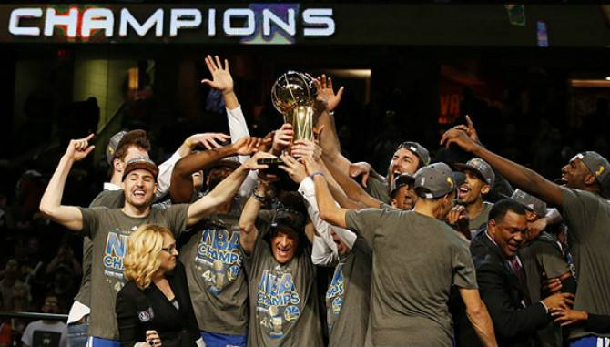
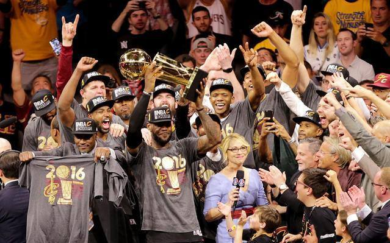
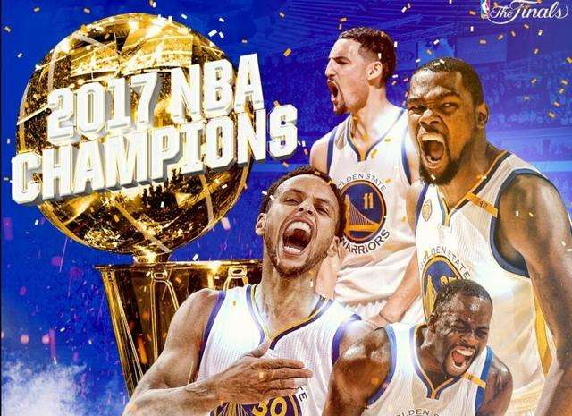

2018NBA总决赛--第四次骑勇大战
2018NBA总决赛--第四次骑勇大战
2015年NBA总决赛，6月5日-17日在金州勇士队和克里夫兰骑士队之间展开，最终勇士4-2战胜骑士，夺得2015年NBA总冠军。6月6日，首场比赛拉开帷幕，金州勇士108-100战胜克里夫兰骑士先下一城，总比分1-0领先。6月8日第二场，克里夫兰骑士2分险胜金州勇士将总比分扳成1-1，并暂时夺得总决赛主场优势。 [1] 回到主场后的克里夫兰骑士再下1局，总比分2-1领先金州勇士。6月12日，G4勇士果断变阵，伊戈达拉提上首发后勇士连下三城，时隔40年后再次获得总冠军奖杯。他们以4-2夺冠。伊戈达拉荣膺总决赛MVP。
2016年NBA总决赛是2015-2016赛季最后一场系列赛程，于2016年6月2日至6月19日(北京时间2016年6月3日至2016年6月20日)进行，由东部联盟冠军克利夫兰骑士队对西部联盟冠军金州勇士队的对决。比赛采用七场四胜制2-2-1-1-1的形式。最终，骑士队成为NBA总决赛历史上第一支由1:3大比分落后并4:3翻盘获胜的球队。
2017NBA总决赛（2017 NBA finals），是2016~2017赛季美国男子篮球职业联赛最后一轮赛程。2017年6月2日，NBA总决赛拉开序幕，西部冠军金州勇士与东部冠军克利夫兰骑士角逐2016～17赛季NBA总冠军。2017年6月13日，勇士以4：1的比分击败骑士，完成复仇，重夺总冠军。
